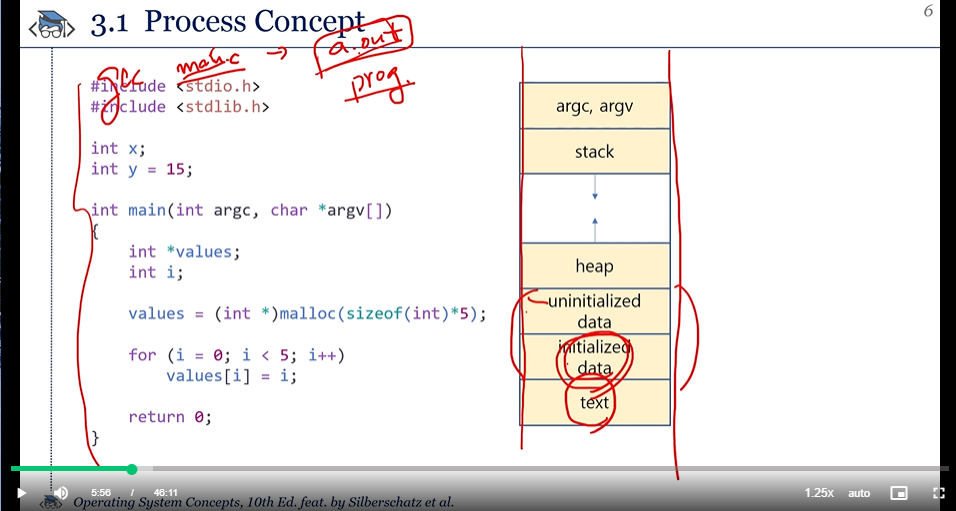
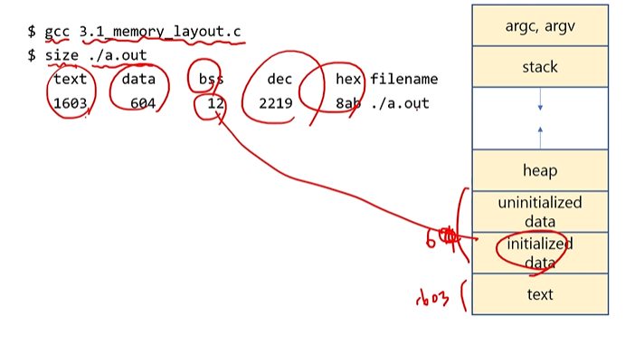

실습 1.


gcc -> a.out 으로 실행파일만듬.
프로세서는 어디에 올라가는가? 모든 램에 올라가나?
큰 파일이면,, 그 전체가?
프로세스 실행상태
PCB란?
PCB는 어디에샐겨?
프로그램 카운터란?
프로세스 당 PCB가 하나인건가?
at the same time, simultaneously,concurrently<-> parallel
wait queue -> ready Queue로감